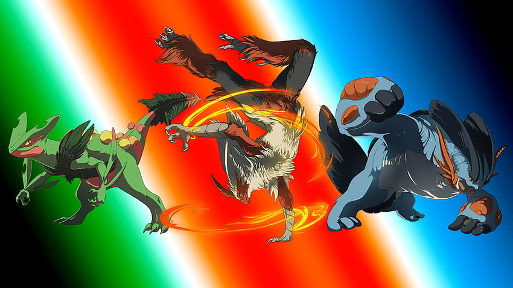
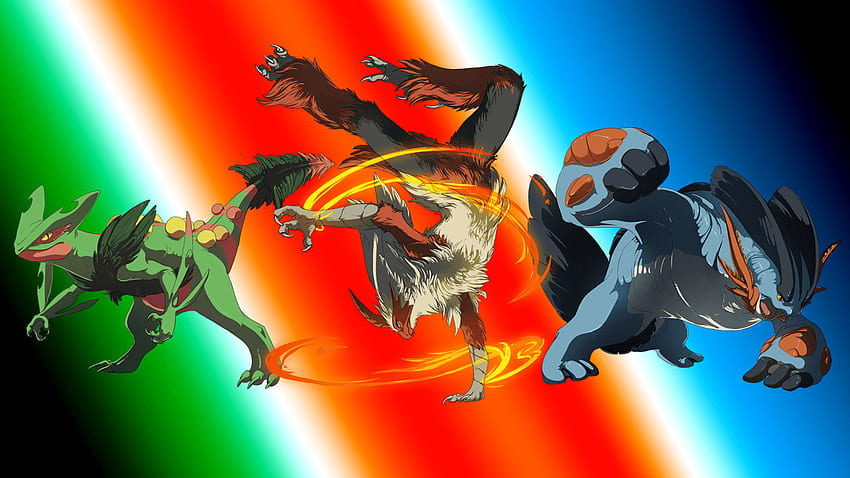

Composición de equipos
En esta ocasión, veremos la importancia de una buena Composición de equipo, no basta con solamente elegir los Pokémon que más te agraden si decides entrar al formato competitivo
En esta ocasión, veremos la importancia de una buena Composición de equipo, no basta con solamente elegir los Pokémon que más te agraden si decides entrar al formato competitivo
Es importante entender de antemano que cada slot en el equipo tiene una razón de ser, una importancia y objetivo, por lo general en el formato competitivo existen diferentes estrategias separadas por nombres clave, tales como: